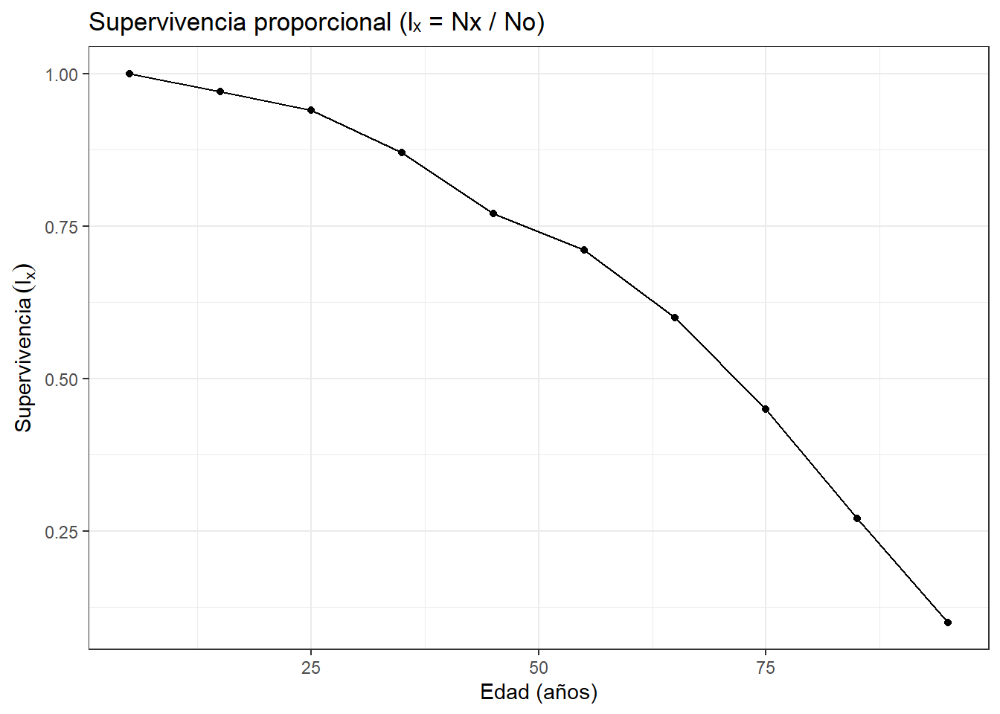

La demografía, ciencia que estudia las poblaciones humanas, es fundamental para comprender la historia y evolución de Homo sapiens. Uno de los métodos más fascinantes para analizar la demografía de poblaciones pasadas es el uso de tablas de vida estáticas, que permiten un vistazo detallado a la mortalidad y la esperanza de vida en un momento particular.
Las tablas de vida son herramientas esenciales para la demografía y la ecología humana, pues proporcionan un retrato detallado de la mortalidad y de la esperanza de vida en diferentes grupos de edad. Esto permite analizar y comparar las características demográficas de poblaciones en distintas épocas y regiones.
Como señala Coale (1972), “las tablas de vida son un registro histórico de la experiencia de una población con respecto a su mortalidad”. Según Wachter (2014), “las tablas de vida estáticas son herramientas esenciales en la investigación demográfica, permitiéndonos desentrañar cómo las poblaciones humanas han evolucionado a lo largo del tiempo”. En palabras de Carey (2001): “las tablas de vida estáticas nos brindan una visión instantánea de cómo las poblaciones están estructuradas por edades y géneros en un momento particular”.
Las tablas de vida permiten describir y analizar los patrones de supervivencia y mortalidad de una población a lo largo del tiempo, revelando cómo los organismos enfrentan riesgos diferenciales según su edad o etapa de desarrollo. A través de estas tablas, los ecólogos pueden identificar períodos críticos en el ciclo de vida, estimar la esperanza de vida, y comprender cómo factores ambientales y biológicos influyen en la dinámica poblacional.
Desde una perspectiva ecológica, las tablas de vida conectan a la historia natural con los procesos demográficos fundamentales. Son esenciales para inferir estrategias de vida, como las especies r-estrategas (de crecimiento rápido, con alta fecundidad y corta vida) o K-estrategas (de crecimiento lento, baja fecundidad y longevidad alta). Además, las tablas de vida son la base para construir modelos matriciales (como las matrices de Leslie y Lefkovitch) y para evaluar la tasa intrínseca de crecimiento poblacional (r), la esperanza de vida al nacer (e₀) y la reproducción neta (R₀).
Este capítulo propone dos ejercicios complementarios: (A) el análisis de censos de cementerios, donde se estudia la supervivencia humana como aproximación demográfica a poblaciones históricas, y (B) un ejercicio basado en el texto clásico de Gotelli (2001), orientado a comprender los fundamentos teóricos de la tabla de vida en un contexto ecológico general.
Objetivos
Comprender el concepto y la estructura de una tabla de vida como herramienta analítica en ecología de poblaciones.
Aplicar procedimientos de cálculo de mortalidad, supervivencia, esperanza de vida y fecundidad a partir de datos observados.
Comparar patrones de supervivencia entre poblaciones humanas (cementerios) y poblaciones hipotéticas (caso de Gotelli, 2001).
Interpretar los resultados demográficos en términos de estrategias adaptativas y presiones ambientales.
Fortalecer habilidades de análisis en R y Excel, vinculando procedimientos cuantitativos con interpretaciones ecológicas.
Competencias
Al finalizar este capítulo, se fortalecerán las siguientes competencias:
Construir e interpretar tablas de vida, diferenciando entre las de tipo estático (transversal) y las de cohorte (longitudinal).
Calcular los parámetros demográficos básicos: tasas de supervivencia (Sx), mortalidad (qx), esperanza de vida (ex) y reproducción neta (R₀).
Analizar la estructura etaria de una población y reconocer cómo se relaciona con la dinámica ecológica y el ambiente.
Comparar estrategias de vida entre organismos, reconociendo patrones de selección r/K y su influencia sobre la estabilidad poblacional.
Aplicar el método científico para interpretar resultados demográficos en contextos ecológicos reales y simulados.
Ejemplo 1. Tablas de vida con demografía de cementerios
Imagen tomada de González et al. (2023)
En este ejercicio, se emplean datos de dos cementerios de Santa Marta como fuente demográfica para construir una tabla de vida transversal o estática. Se utilizarán los registros de edad al morir para calcular:
Frecuencia de muertes por intervalo de edad (Fx)
Proporción de individuos sobrevivientes (lx)
Tasa de mortalidad específica (qx)
Esperanza de vida al inicio del intervalo (ex)
Los datos se encuentran en el archivo cementerios.xlsx, y los procedimientos incluyen limpieza de datos, construcción de intervalos etarios y aplicación de fórmulas demográficas. Este ejercicio permite comparar patrones de mortalidad entre diferentes localidades o épocas, evidenciando cómo la historia, el ambiente y la cultura afectan la supervivencia humana.
Objetivos
Elaborar tablas de vida estáticas a partir de censos de cementerios.
Comprender cómo estas tablas permiten analizar la supervivencia y la esperanza de vida en diferentes grupos de edad.
Comparar diferencias de mortalidad y longevidad entre hombres y mujeres.
Competencias
Analíticas: Construir tablas de vida a partir de datos censales.
Metodológicas: Aplicar fórmulas demográficas a datos ecológicos y humanos.
Críticas: Evaluar las diferencias entre sexos y grupos de edad en términos de supervivencia y esperanza de vida.
Comunicativas: Presentar resultados en tablas, gráficas y discusión comparativa.
Apectos generales del diseño para obtener los datos
Se deben colectar datos de nacimiento, defunción y sexo de las personas censadas.
En los cementerios, cada grupo de personas realiza un censo de por lo menos 200 tumbas seleccionadas al azar.En caso de mausoleos familiares, registrar solo una tumba.
La tabla debe tener las siguientes columnas:
No
Año de nacimiento
Año de muerte
Edad al morir
Sexo (F/M)
Observaciones
Se cuenta con un formato a manera de ejemplo en el siguiente enlace de tabla y luego descargar en formato xlsx para el informe. Adicionalmente, se elabora un croquis con la ubicación de las tumbas censadas y los recorridos realizados:
Ejemplo del diseño de muestreo del cementerio Jardines de Jerusalén en Santa Marta. Imagen tomada de González et al. (2023)
Análisis de los resultados. Al final del ejercicio, se requiere comparar los resultados obtenidos con estudios locales y nacionales en Colombia. La discusión debe responder preguntas como: ¿Cuál de los dos sexos es más longevo?, ¿En qué clases de edad se observa mayor supervivencia?, ¿Qué disciplinas (ej. sociología, salud pública, antropología) complementan este análisis y qué hallazgos reportan? y ¿Qué estrategias se pueden implementar para mejorar la esperanza de vida en la ciudad?
Cálculos a realizar. Luego de haber tabulado los datos,se construirán tablas de vida estáticas con los estimadores básicos (\(q_x\), \(l_x\), \(S_x\), \(e_x\)), por cada cementerio.
A continuación se muestra un procedimiento en R, en el que se utilizan los datos censados, para la elaboración de la tabla de vida por cada cementerio, analizando los siguientes aspectos:
Construir una tabla de vida por cada cementerio, incluida la esperanza de vida (\(e_x\)).
Graficar algunos estimadores de supervivencia como \(l_x\) y \(e_x\) y compararlas entre cementerios.
Comparar los estimadores de supervivencia - \(l_x\) y \(e_x\) entre sexos y por cada cementerio.
Calcular el tamaño mínimo de muestra requerida para el número de tumbas que se deben censar.
Proporción de sobrevivientes por clase de edad (\(l_x\))
\(l_x = \frac{N_x}{N_0}\)
Donde:
- (\(N_0\)) = número inicial de individuos de la cohorte ficticia.
- (\(N_x\)) = número de sobrevivientes al inicio del intervalo de edad (\(x\)).
Probabilidad de supervivencia por clase de edad (\(S_x\))
\(S_x = \frac{N_{x+1}}{N_x}\)
Donde:
- (\(N_{x+1}\)) = número de individuos de la clase de edad siguiente \({x+1}\).
- (\(N_x\)) = número de sobrevivientes al inicio del intervalo de edad (\(x\)).
Esperanza de vida por clase de edad (\(e_x\))
Se calcula a partir de los estimadores (L_x) y (T_x):
\([ L_x = \frac{N_x + N_{x+1}}{2} ]\)
\([ T_x = \sum\_{t \geq x} L_t ]\)
\([ e_x = \frac{T_x}{L_x} ]\)
Descripción general del ejercicio. A partir de las edades al morir de 600 individuos de cada cementerio censado, se construye una tabla de vida estática por clases de edad decenales. Se usa la cohorte ficticia con \(N_0=600\) individuos y se calculan: \(N_x\) (supervivientes al inicio del intervalo), \(L_x\) (años-persona vividos en el intervalo), \(T_x\) (acumulado hacia edades avanzadas) y \(e_x\) (esperanza de vida) con la relación \(e_x = T_x / N_x\). El último intervalo es abierto y se aproxima con \(L_\omega \approx \tfrac{n}{2}\,N_\omega\).
A. Cementerio San Miguel - Santa Marta
Paso 1) Librerías y lectura de la base de datos
Se cargan las librerías y el archivo que cuenta con los datos del censo realizado al cementerio San Miguel - cementerios.xlsx (hoja “Datos San Miguel”). Si hay edades faltantes pero existen año de nacimiento y muerte, se calcula \(edad = muerte - nacimiento\), para asegurar un tamaño de muestra \(N_0=600\) individuos censados.
Código
library(readxl); library(dplyr); library(tidyr); library(stringr); library(ggplot2);library(kableExtra)# Base de datos del censo - datos1datos1 <- readxl::read_excel("cementerios.xlsx", sheet ="San_Miguel") %>%transmute(id =as.integer(`INDIVIDUO`),nac =as.integer(`NACIMIENTO`),mue =as.integer(`MUERTE`),edad =as.integer(`EDAD INDIVIDUO`),sexo =as.character(`SEXO`) ) %>%mutate(edad =if_else(is.na(edad) &!is.na(mue) &!is.na(nac), mue - nac, edad)) %>%filter(!is.na(edad), edad >= 0L) # Garantizar No = 600nrow(datos1) # verificación del número de datos1
[1] 600
Paso 2) Clases de edad y frecuencias \(n_x\)
Se definen las clases decenales de edad con intervalos de \(n=10\) años (ancho = 10).
Se asigna a cada individuo a una clase con cut()sin etiquetas, recuperar el límite inferior\(x\) de cada clase a partir de los cortes (evitando parsear texto como “110+”) y contar las frecuencias\(n_x\) por clase. Definición:\(n_x\) es el número de individuos que mueren en la clase de edad \([x, x+n)\).
Código
# Ancho o tamaño de los intervalos de claseancho <-10# Cortes o intervalos hasta cubrir la edad máxima observadacortes <-seq(0, ceiling((max(datos1$edad) +1) / ancho) * ancho, by = ancho)# Inicio de la tabla de vida con las clases de edad y la frecuencia (nx)tbl_ini <- datos1 %>%mutate(# índice del intervalo (1,2,3, …)bin =cut(edad, breaks = cortes, right =FALSE, include.lowest =TRUE, labels =FALSE),# límite inferior del intervaloedad_ini = cortes[bin],# ¿es el último intervalo?es_ultimo = edad_ini ==max(cortes) - ancho,# etiquetar “a-b” para clases internas y “a+” para la últimaclase =if_else(es_ultimo,paste0(edad_ini, "+"),paste0(edad_ini, "-", edad_ini + ancho -1))) %>%count(clase, edad_ini, name ="nx") %>%arrange(edad_ini)# Mostrar la tabla inicialtbl_ini %>%select(-edad_ini) %>%kbl(caption ="Cementerio San Miguel. Clases de edad y frecuencias de datos (nx)") %>%kable_classic(full_width =FALSE)
Cementerio San Miguel. Clases de edad y frecuencias de datos (nx)
clase
nx
0-9
22
10-19
18
20-29
43
30-39
30
40-49
45
50-59
42
60-69
80
70-79
137
80-89
111
90-99
61
100-109
8
110-119
1
120+
2
Paso 3) Cálculo del resto de estimadores de la tabla de vida
Primero se elabora una cohorte ficticia iniciando con \(N_0 = \sum_x n_x = 600\) individuos. Para cada clase con límite inferior de la clase de edad \(x\):
Cohorte fictica de supervivientes al inicio de cada intervalo: \[N_x \;=\; \sum_{y \ge x} n_y \,.\] donde
\(N_x\): número de individuos vivos al inicio del intervalo de edad \(x\).
\(n_y\): número de defunciones ocurridas a la edad \(y\).
la suma \(\sum_{y \ge x}\) indica que se cuentan todas las muertes desde \(x\) en adelante.
Proporción de supervivencia - Horario de supervivencia \[l_x = \frac{N_{x}}{N_0}\] donde
\(l_x\): proporción de individuos de la cohorte inicial que llegan vivos a la edad \(x\).
\(N_x\): número de individuos sobrevivientes al inicio del intervalo de edad \(x\).
\(N_0\): tamaño de la cohorte al nacer (el número de individuos con los que comienza la tabla de vida).
Probabilidad de supervivencia \[S_x = \frac{N_{x+1}}{N_x}\] donde
\(S_x\) probabilidad de que un individuo de edad \(x\) sobreviva al siguiente intervalo.
\(N_x\): número de individuos vivos al inicio del intervalo.
\(N_{x+1}\): número de individuos vivos al inicio del intervalo siguiente.
Años-persona vividos en el intervalo (aprox. muertes uniformes): \[L_x \;\approx\; n \cdot \frac{N_x + N_{x+1}}{2}\,\] donde
\(L_x\): número de años-persona aportados por la cohorte en el intervalo. Variable requerida para el cálculo de \(e_x\).
\(n\): amplitud del intervalo de edad (en este ejemplo: 10 años).
\(\frac{N_x + N_{x+1}}{2}\): promedio de individuos vivos en el intervalo (asumiendo muertes distribuidas uniformemente).
Último intervalo abierto\(\omega\): \[L_\omega \;\approx\; \frac{n}{2}\, N_\omega \,\] donde
\(L_\omega\): años-persona vividos en el último intervalo.
\(\omega\): número de individuos vivos al inicio del intervalo abierto.
\(\frac{n}{2}\): se aproxima con la mitad de la amplitud del intervalo, pues todos los sobrevivientes mueren dentro de ese mismo rango.
Acumulado hacia edades avanzadas: \[T_x \;=\; \sum_{y \ge x} L_y \,\] donde
\(T_x\): total de años-persona que le restan a la cohorte a partir de la edad \(x\). Variable requerida para el cálculo de \(e_x\).
\(L_y\): años-persona vividos en cada intervalo igual o posterior a \(x\).
Esperanza de vida (años): \[e_x \;=\; \frac{T_x}{N_x}\,\] donde
\(e_x\): esperanza de vida a la edad \(x\).
\(T_x\): total de años-persona que restan por vivir a partir de \(x\).
\(N_x\): número de individuos vivos al inicio de la edad \(x\).
Código
# Estimadores de la tabla de vidaN0 <-sum(tbl_ini$nx)N_x <-rev(cumsum(rev(tbl_ini$nx)))Sx <- (dplyr::lead(N_x) / N_x) |> tidyr::replace_na(0) |>round(2) # Último valor es cerolx <-round(N_x / N0, 2)Lx <- (N_x + dplyr::lead(N_x))/2* anchoLx[is.na(Lx)] <- (ancho/2) *tail(N_x, 1) # último abiertoTx <-rev(cumsum(rev(Lx)))ex <-round(Tx / N_x,1)# Organización de la tabla de vidatabla_vida_sm <- tbl_ini %>%mutate(Nx = N_x, Sx = Sx, lx = lx, Lx = Lx, Tx = Tx, ex = ex,edad_med = edad_ini + ancho/2)# Mostrar la tabla de vidatabla_vida_sm %>%select(-edad_ini, -edad_med) %>%kbl(caption ="Cementerio San Miguel. Clases de edad y frecuencias de datos (nx)") %>%kable_classic(full_width =FALSE)
Cementerio San Miguel. Clases de edad y frecuencias de datos (nx)
clase
nx
Nx
Sx
lx
Lx
Tx
ex
0-9
22
600
0.96
1.00
5890
38750
64.6
10-19
18
578
0.97
0.96
5690
32860
56.9
20-29
43
560
0.92
0.93
5385
27170
48.5
30-39
30
517
0.94
0.86
5020
21785
42.1
40-49
45
487
0.91
0.81
4645
16765
34.4
50-59
42
442
0.90
0.74
4210
12120
27.4
60-69
80
400
0.80
0.67
3600
7910
19.8
70-79
137
320
0.57
0.53
2515
4310
13.5
80-89
111
183
0.39
0.30
1275
1795
9.8
90-99
61
72
0.15
0.12
415
520
7.2
100-109
8
11
0.27
0.02
70
105
9.5
110-119
1
3
0.67
0.00
25
35
11.7
120+
2
2
0.00
0.00
10
10
5.0
Paso 4) Gráficos: supervivencia \(l_x\) y de esperanza de vida \(e_x\)
A continuación se graficarán los estimadores \(l_x = N_x/N_0\) como supervivencia proporcional y \(e_x\) como años esperados por sobreviviente a la edad \(x\).
Código
# Figura de esperanza de vida (ex)g_lx <-ggplot(tabla_vida_sm, aes(edad_med, lx)) +geom_line() +geom_point() +labs(x ="Edad (años)", y =expression("Supervivencia"~(l[x])),title ="Supervivencia proporcional (l\u2093 = Nx / No)") +theme_bw()# Figura del horario de supervivencia (lx)g_ex <-ggplot(tabla_vida_sm, aes(edad_med, ex)) +geom_line() +geom_point() +labs(x ="Edad (años)", y =expression(e[x]~"(años)"),title ="Esperanza de vida (e\u2093 = Tx / Nx)") +theme_bw()g_lx
Código
g_ex
Paso 5) Comparativo entre sexos - \(e_x\) y \(l_x\)
Código
# Insumos requeridos para la figura (Insumos del Paso 1)datos1 <- datos1 # Datos del censo al cementerioancho <-10# Amplitud de los irtervalos de edad en la tvcortes <- cortes # Intervalos hasta cubrir la edad máxima observada# etiquetas para los intervalos (última como "a+")starts <-head(cortes, -1)labs <-paste0(starts, "-", starts + ancho -1)labs[length(labs)] <-paste0(starts[length(starts)], "+")tbl_sex <- datos1 %>%mutate(clase =cut(edad,breaks = cortes,right =FALSE,include.lowest =TRUE,labels = labs),edad_ini =as.integer(sub("-.*", "", as.character(clase))) ) %>%count(sexo, clase, edad_ini, name ="nx") %>%arrange(sexo, edad_ini)# Tabla de vida por cada sexotv_sex <- tbl_sex %>%group_by(sexo) %>%arrange(edad_ini, .by_group =TRUE) %>%mutate(N0 =sum(nx), # radix por sexoN_x =rev(cumsum(rev(nx))), # supervivientes al inicio del intervaloLx = (N_x +lead(N_x))/2* ancho, # años-persona en el intervaloLx =if_else(is.na(Lx), (ancho/2) *last(N_x), Lx), # último intervalo abiertoTx =rev(cumsum(rev(Lx))),ex = Tx / N_x,lx = N_x / N0,edad_med = edad_ini + ancho/2 ) %>%ungroup()# --- Figuras ---# 1) Esperanza de vida (e_x) por sexog_ex_sex <-ggplot(tv_sex, aes(x = edad_med, y = ex, color = sexo)) +geom_line() +geom_point() +labs(x ="Edad (años, punto medio del intervalo)",y =expression(e[x]~"(años)"),color ="Sexo",title ="Esperanza de vida (e\u2093) por sexo") +theme_bw()# 2) Supervivencia (lx) por sexog_lx_sex <-ggplot(tv_sex, aes(x = edad_med, y = lx, color = sexo)) +geom_line() +geom_point() +labs(x ="Edad (años, punto medio del intervalo)",y =expression(l[x]),color ="Sexo",title ="Supervivencia (l\u2093 = N\u2093 / N\u2092) por sexo") +theme_bw()g_ex_sex
Código
g_lx_sex
Patrones observados por sexos
Figura de\(e_x\). La curva de las muejeres está por encima en la mayoría de las edades, indicando que ese sexo presenta mayor esperanza de vida, aunque los hombres presentan mayor longevidad.
Figura de\(l_x\). un \(l_x\) El patrón presentado es similar al de la figura anterior.
Código
# Tabla base por sexoresumen_e0 <- tv_sex %>%group_by(sexo) %>%slice_min(edad_ini, n =1, with_ties =FALSE) %>%# toma el primer intervalo (x = 0)transmute(sexo, N0 = N0, e0 =round(ex, 2)) %>%ungroup()# Tabla de la esperanza de vidaresumen_e0 %>%kbl(caption ="Esperanza de vida al nacer (e\u2092) por sexo",booktabs =TRUE, digits =2, align ="c" ) %>%kable_classic(full_width =FALSE, html_font ="Cambria")
Esperanza de vida al nacer (eₒ) por sexo
sexo
N0
e0
F
285
68.05
M
315
61.38
Las mujeres viven en promedio ~6.7 años más que los hombres. Este patrón es consistente con tendencias observadas en muchas poblaciones humanas:
Las mujeres suelen tener ventajas biológicas (resistencia inmunológica, menor mortalidad en edades tempranas).
También influyen factores socioculturales (riesgos ocupacionales, conductas de riesgo más comunes en hombres).
5.1) Comparación estadística entre sexos (Bootstrap).
Bootstrap es un método estadístico y compuacional de remuestreo, que permite evaluar la incertidumbre de una estimación (con esperanza de vida \(e_0\)). Consiste en reutilizar los datos de campo, para generar muchas muestras aleatorias (con reemplazo) a partir del ese conjunto original y en cada una se recalcula el estimador de interés. Al repetir este proceso miles de veces se obtiene una distribución de valores simulados, que refleja la variabilidad que tendría el estimador si repitiéramos el estudio muchas veces en condiciones similares (si aumentaramos el esfuerzo de muestreo).
En este ejercicio, se alica la prueba de Bootstrap para comparar la esperanza de vida entre hombres y mujeres. A partir de la distribución de diferencias (\(e_0^{(F)} - e_0^{(M)}\)) obtenida por remuestreo. Con lo anterior se obtienen intervalos de confianza (IC 95%) y la significancia de la comparación entre sexos (p-valor). Si el IC no incluye el cero (como ocurrirá en este ejercicio), se puede confirmar que la diferencia observada no es producto del azar, sino que refleja un patrón real y en ese sentido, las mujeres presentarán una mayor esperanza de vida que los hombres.
Código
# --- Bootstrap estratificado para la diferencia de e0 entre sexos ---library(dplyr)# Definir las categorías de sexossex_levels <-c("F", "M") # o c("M","F"), puede ser A, B# Asegurar datos y anchoif (!exists("datos1")) {library(readxl) datos1 <- readxl::read_excel("cemementerios.xlsx", sheet ="San_Miguel") %>%transmute(edad =as.integer(`EDAD INDIVIDUO`),nac =as.integer(`NACIMIENTO`),mue =as.integer(`MUERTE`),sexo =as.character(`SEXO`) ) %>%mutate(edad =if_else(is.na(edad) &!is.na(mue) &!is.na(nac), mue - nac, edad)) %>%filter(!is.na(edad), edad >= 0L)}if (!exists("ancho")) ancho <-10# Función que calcula e0 desde un vector de edades (misma lógica de la tabla de vida)e0_from_edades <-function(edades, ancho =10) { edades <- edades[is.finite(edades) & edades >=0]if (length(edades) ==0) return(NA_real_) cortes <-seq(0, ceiling((max(edades) +1)/ancho) * ancho, by = ancho) bin <-as.integer(cut(edades, breaks = cortes, right =FALSE, include_lowest =TRUE)) nx <-as.integer(tabulate(bin, nbins =length(cortes) -1))if (sum(nx) ==0) return(NA_real_) N_x <-rev(cumsum(rev(nx))) Lx <- (N_x + dplyr::lead(N_x))/2* ancho Lx[is.na(Lx)] <- (ancho/2) *tail(N_x, 1) # último intervalo abierto Tx <-rev(cumsum(rev(Lx))) e0 <- Tx[1] / N_x[1] e0}# Preparar estratos por sexo (tomamos sólo los dos con datos)sex_levels <- datos1 %>%filter(!is.na(sexo)) %>%count(sexo, name ="n") %>%arrange(desc(n)) %>%pull(sexo)if (length(sex_levels) <2) {stop("Se requiere al menos dos sexos con datos para el contraste.")}sex_levels <- sex_levels[1:2] # usar los dos principales (p.ej., 'F' y 'M')edades_A <- datos1$edad[datos1$sexo == sex_levels[1]]edades_B <- datos1$edad[datos1$sexo == sex_levels[2]]nA <-length(edades_A); nB <-length(edades_B)# e0 observado por sexo y diferenciae0_A <-e0_from_edades(edades_A, ancho = ancho)e0_B <-e0_from_edades(edades_B, ancho = ancho)delta_obs <- e0_B - e0_A # por convención: B - A (si tus etiquetas son M/F, típicamente M - F)# Bootstrapset.seed(123)B <-2000delta_boot <-replicate(B, { samp_A <-sample(edades_A, size = nA, replace =TRUE) samp_B <-sample(edades_B, size = nB, replace =TRUE) e0A_b <-e0_from_edades(samp_A, ancho = ancho) e0B_b <-e0_from_edades(samp_B, ancho = ancho) e0B_b - e0A_b})# Intervalo percentil y p-valor aproximado de dos colasci <-quantile(delta_boot, probs =c(0.025, 0.975), na.rm =TRUE)# p-valor bilateral consistente con el IC percentilpval <-2*min(mean(delta_boot <=0, na.rm =TRUE),mean(delta_boot >=0, na.rm =TRUE))# (Opcional) Histograma de la distribución bootstrap de la diferencialibrary(ggplot2)ggplot(data.frame(delta = delta_boot), aes(x = delta)) +geom_histogram(bins =40) +geom_vline(xintercept = delta_obs, linetype =2) +geom_vline(xintercept = ci, linetype =3) +labs(x =paste0("Δ eo = eo(", sex_levels[2], ") - eo(", sex_levels[1], ")"),y ="Frecuencia",title ="Bootstrap estratificado de la diferencia de e0 entre sexos") +theme_bw()
Análisis del patrón gráfico encontrado.
El histograma representa la distribución bootstrap de la diferencia \(\Delta e_0 = e_0(F) - e_0(M)\). Esta distribución bootstrap de \(Δ𝑒_0\) es estratificada por sexos. Con una mediana ≈ 6–7 años (línea punteada central), con IC del 95% (percentiles): ≈ 2–3 a 10–11 años (líneas punteadas laterales).
Este indica que, en la muestra de 600 tumbas censadas en el cementerio de San Miguel, las mujeres viven en promedio más años que los hombres y la diferencia está respaldada estadísticamente por el bootstrap.
Las líneas punteadas marcan el intervalo de confianza - IC del 95% (percentil). Estos IC indican lo siguiente:
El intervalo no incluye el valor 0 que representa al límite inferior que está cerca de ~2 años.
Eso significa que, bajo el remuestreo que genera Bootstrap, casi nunca se presentará una diferencia negativa (donde la esperanza de vida \(e_x\) de M > F).
Las mujeres (F) tienen, en promedio, una esperanza de vida inicial (\(e_0\)) mayor que los hombres (M).
La magnitud de la diferencia en la esperanza de vida entre sexos, ronda al rededor de los 5–7 años, como lo muestra la mediana bootstrap.
Código
# Resumen numéricores_boot <- tibble::tibble(sexo_A = sex_levels[1],sexo_B = sex_levels[2],e0_A =round(e0_A,1),e0_B =round(e0_B,1),diff_B_A =round(delta_obs,1),CI2.5 =round(unname(ci[1]),1),CI97.5 =round(unname(ci[2]),1),valor_p_dos_colas =round(pval,2),B = B)# Mostrar la tabla base requeridares_boot %>%kbl(caption ="Resultados numéricos del Bootstrap") %>%kable_classic(full_width =FALSE)
Resultados numéricos del Bootstrap
sexo_A
sexo_B
e0_A
e0_B
diff_B_A
CI2.5
CI97.5
valor_p_dos_colas
B
M
F
61.4
68.1
6.7
2.8
10.9
0
2000
Análisis del resultado tabular.
La esperanza de vida - e₀ de hombres (M): ~61.4 años y e₀ de mujeres (F): ~68.1 años. La diferencia observada (F – M): ~6.7 años de mayor esperanza de vida en las mujeres. El IC al 95%: (2.8, 10.9), por ser positivo, indica que la esperanza de vida femenina es mayor, mostrando que el aumento en dicha esperanza está entre 2.8 y 11 años. El valor p obtenido de cero (<<0.05), es coherente con el IC, indicando que las diferencias en la esperanza de vida entre sexos es altamente significativa.
En este sentido se vuelve a demostrar que las mujeres tienen una esperanza de vida significativamente mayor que los hombres (≈7 años de ventaja). El IC 95% confirma que la diferencia es robusta (mínimo ≈3 años, máximo ≈11).
A partir del censo de 600 tumbas, la esperanza de vida al inicio de la tabla ($e_0$) fue de 61.4 años en hombres y 68.1 años en mujeres, lo que representa una ventaja femenina de 6.7 años. El intervalo de confianza obtenido mediante bootstrap (IC 95%: 2.8 – 10.9) se mantuvo siempre positivo y confirma que la diferencia es robusta (mínimo ≈3 años, máximo ≈11 años de mayor esperanza de vida), demostrando que la esperanza de vida en las mujeres es estadísticamente mayor que la de los hombres. Este resultado es consistente con el patrón demográfico descrito en poblaciones humanas: las mujeres suelen presentar mayor supervivencia acumulada y, en consecuencia, una esperanza de vida superior.
B. Cementerio Jardines de Paz - Santa Marta
Pasos 1 a 3) Librerías y lectura de la base de datos
Se fusionan los tres pasos inciiales, para resumir el procedimiento de construir la tabla de vida de esta muestra de cementerios. El número de intervalos es menor, porque los individuos en esta muestra son menos longevos que los del primer cementerio.
Código
# Paso 1)# Base de datos del censo - datos2datos2 <- readxl::read_excel("cementerios.xlsx", sheet ="Jardines_Paz") %>%transmute(id =as.integer(`INDIVIDUO`),nac =as.integer(`NACIMIENTO`),mue =as.integer(`MUERTE`),edad =as.integer(`EDAD INDIVIDUO`),sexo =as.character(`SEXO`) ) %>%mutate(edad =if_else(is.na(edad) &!is.na(mue) &!is.na(nac), mue - nac, edad)) %>%filter(!is.na(edad), edad >= 0L) # Garantizar No = 600nrow(datos2) # verificación del número de datos
[1] 600
Código
#---# Paso 2)# Ancho o tamaño de los intervalos de claseancho <-10# Cortes o intervalos hasta cubrir la edad máxima observadacortes <-seq(0, ceiling((max(datos2$edad) +1) / ancho) * ancho, by = ancho)# Inicio de la tabla de vida con las clases de edad y la frecuencia (nx)tbl_ini <- datos2 %>%mutate(# índice del intervalo (1,2,3, …)bin =cut(edad, breaks = cortes, right =FALSE, include.lowest =TRUE, labels =FALSE),# límite inferior del intervaloedad_ini = cortes[bin],# ¿es el último intervalo?es_ultimo = edad_ini ==max(cortes) - ancho,# etiquetar “a-b” para clases internas y “a+” para la últimaclase =if_else(es_ultimo,paste0(edad_ini, "+"),paste0(edad_ini, "-", edad_ini + ancho -1))) %>%count(clase, edad_ini, name ="nx") %>%arrange(edad_ini)# Estimadores de la tabla de vidaN0 <-sum(tbl_ini$nx)N_x <-rev(cumsum(rev(tbl_ini$nx)))Sx <- (dplyr::lead(N_x) / N_x) |> tidyr::replace_na(0) |>round(2) # Último valor es cerolx <-round(N_x / N0, 2)Lx <- (N_x + dplyr::lead(N_x))/2* anchoLx[is.na(Lx)] <- (ancho/2) *tail(N_x, 1) # último abiertoTx <-rev(cumsum(rev(Lx)))ex <-round(Tx / N_x,1)# Organización de la tabla de vidatabla_vida_jp <- tbl_ini %>%mutate(Nx = N_x, Sx = Sx, lx = lx, Lx = Lx, Tx = Tx, ex = ex,edad_med = edad_ini + ancho/2)# Mostrar la tabla de vidatabla_vida_jp %>%select(-edad_ini, -edad_med) %>%kbl(caption ="Cementerio Jardines de Paz. Clases de edad y frecuencias de datos (nx)") %>%kable_classic(full_width =FALSE)
Cementerio Jardines de Paz. Clases de edad y frecuencias de datos (nx)
clase
nx
Nx
Sx
lx
Lx
Tx
ex
0-9
16
600
0.97
1.00
5920
37050
61.8
10-19
23
584
0.96
0.97
5725
31130
53.3
20-29
38
561
0.93
0.94
5420
25405
45.3
30-39
59
523
0.89
0.87
4935
19985
38.2
40-49
40
464
0.91
0.77
4440
15050
32.4
50-59
63
424
0.85
0.71
3925
10610
25.0
60-69
90
361
0.75
0.60
3160
6685
18.5
70-79
111
271
0.59
0.45
2155
3525
13.0
80-89
103
160
0.36
0.27
1085
1370
8.6
90+
57
57
0.00
0.10
285
285
5.0
Paso 4) Gráficos: supervivencia \(l_x\) y de esperanza de vida \(e_x\)
A continuación se graficarán los estimadores \(l_x = N_x/N_0\) como supervivencia proporcional y \(e_x\) como años esperados por sobreviviente a la edad \(x\).
Código
# Figura de esperanza de vida (ex)g_lx <-ggplot(tabla_vida_jp, aes(edad_med, lx)) +geom_line() +geom_point() +labs(x ="Edad (años)", y =expression("Supervivencia"~(l[x])),title ="Supervivencia proporcional (l\u2093 = Nx / No)") +theme_bw()# Figura del horario de supervivencia (lx)g_ex <-ggplot(tabla_vida_jp, aes(edad_med, ex)) +geom_line() +geom_point() +labs(x ="Edad (años)", y =expression(e[x]~"(años)"),title ="Esperanza de vida (e\u2093 = Tx / Nx)") +theme_bw()g_lx

Código
g_ex
Paso 5) Comparativo entre sexos - \(e_x\) y \(l_x\)
Código
# Insumos requeridos para la figura (Insumos del Paso 1)datos2 <- datos2 # Datos del censo al cementerioancho <-10# Amplitud de los irtervalos de edad en la tvcortes <- cortes # Intervalos hasta cubrir la edad máxima observada# etiquetas para los intervalos (última como "a+")starts <-head(cortes, -1)labs <-paste0(starts, "-", starts + ancho -1)labs[length(labs)] <-paste0(starts[length(starts)], "+")tbl_sex <- datos2 %>%mutate(clase =cut(edad,breaks = cortes,right =FALSE,include.lowest =TRUE,labels = labs),edad_ini =as.integer(sub("-.*", "", as.character(clase))) ) %>%count(sexo, clase, edad_ini, name ="nx") %>%arrange(sexo, edad_ini)# Tabla de vida por cada sexotv_sex <- tbl_sex %>%group_by(sexo) %>%arrange(edad_ini, .by_group =TRUE) %>%mutate(N0 =sum(nx), # radix por sexoN_x =rev(cumsum(rev(nx))), # supervivientes al inicio del intervaloLx = (N_x +lead(N_x))/2* ancho, # años-persona en el intervaloLx =if_else(is.na(Lx), (ancho/2) *last(N_x), Lx), # último intervalo abiertoTx =rev(cumsum(rev(Lx))),ex = Tx / N_x,lx = N_x / N0,edad_med = edad_ini + ancho/2 ) %>%ungroup()# --- Figuras ---# 1) Esperanza de vida (e_x) por sexog_ex_sex <-ggplot(tv_sex, aes(x = edad_med, y = ex, color = sexo)) +geom_line() +geom_point() +labs(x ="Edad (años, punto medio del intervalo)",y =expression(e[x]~"(años)"),color ="Sexo",title ="Esperanza de vida (e\u2093) por sexo") +theme_bw()# 2) Supervivencia (lx) por sexog_lx_sex <-ggplot(tv_sex, aes(x = edad_med, y = lx, color = sexo)) +geom_line() +geom_point() +labs(x ="Edad (años, punto medio del intervalo)",y =expression(l[x]),color ="Sexo",title ="Supervivencia (l\u2093 = N\u2093 / N\u2092) por sexo") +theme_bw()g_ex_sex
Código
g_lx_sex
Patrones observados por sexos
Figura de\(e_x\). A pesar que la curva de las mujeres está por encima, casi se iguala en los últimos intervalos de edades.
Figura de\(l_x\). El patrón es inverso al de la figura anterior, porque la separación en la supervivencia se da en los últimos intervalos.
Código
# Tabla base por sexoresumen_e0 <- tv_sex %>%group_by(sexo) %>%slice_min(edad_ini, n =1, with_ties =FALSE) %>%# toma el primer intervalo (x = 0)transmute(sexo, N0 = N0, e0 =round(ex, 2)) %>%ungroup()# Tablaresumen_e0 %>%kbl(caption ="Esperanza de vida al nacer (e\u2092) por sexo",booktabs =TRUE, digits =2, align ="c" ) %>%kable_classic(full_width =FALSE, html_font ="Cambria")
Esperanza de vida al nacer (eₒ) por sexo
sexo
N0
e0
F
286
66.26
M
314
57.64
Similar al primer cementerio, las mujeres viven en promedio ~7.12 años más que los hombres.
5.1) Comparación estadística entre sexos (Bootstrap).
Código
# --- Bootstrap estratificado para la diferencia de e0 entre sexos ---library(dplyr)# Definir las categorías de sexossex_levels <-c("F", "M") # o c("M","F"), puede ser A, B# Asegurar datos y anchoif (!exists("datos2")) {library(readxl) datos2 <- readxl::read_excel("cemementerios.xlsx", sheet ="Jardines_Paz") %>%transmute(edad =as.integer(`EDAD INDIVIDUO`),nac =as.integer(`NACIMIENTO`),mue =as.integer(`MUERTE`),sexo =as.character(`SEXO`) ) %>%mutate(edad =if_else(is.na(edad) &!is.na(mue) &!is.na(nac), mue - nac, edad)) %>%filter(!is.na(edad), edad >= 0L)}if (!exists("ancho")) ancho <-10# Función que calcula e0 desde un vector de edades (misma lógica de la tabla de vida)e0_from_edades <-function(edades, ancho =10) { edades <- edades[is.finite(edades) & edades >=0]if (length(edades) ==0) return(NA_real_) cortes <-seq(0, ceiling((max(edades) +1)/ancho) * ancho, by = ancho) bin <-as.integer(cut(edades, breaks = cortes, right =FALSE, include_lowest =TRUE)) nx <-as.integer(tabulate(bin, nbins =length(cortes) -1))if (sum(nx) ==0) return(NA_real_) N_x <-rev(cumsum(rev(nx))) Lx <- (N_x + dplyr::lead(N_x))/2* ancho Lx[is.na(Lx)] <- (ancho/2) *tail(N_x, 1) # último intervalo abierto Tx <-rev(cumsum(rev(Lx))) e0 <- Tx[1] / N_x[1] e0}# Preparar estratos por sexo (tomamos sólo los dos con datos)sex_levels <- datos2 %>%filter(!is.na(sexo)) %>%count(sexo, name ="n") %>%arrange(desc(n)) %>%pull(sexo)if (length(sex_levels) <2) {stop("Se requiere al menos dos sexos con datos para el contraste.")}sex_levels <- sex_levels[1:2] # usar los dos principales (p.ej., 'F' y 'M')edades_A <- datos2$edad[datos2$sexo == sex_levels[1]]edades_B <- datos2$edad[datos2$sexo == sex_levels[2]]nA <-length(edades_A); nB <-length(edades_B)# e0 observado por sexo y diferenciae0_A <-e0_from_edades(edades_A, ancho = ancho)e0_B <-e0_from_edades(edades_B, ancho = ancho)delta_obs <- e0_B - e0_A # por convención: B - A (si tus etiquetas son M/F, típicamente M - F)# Bootstrapset.seed(123)B <-2000delta_boot <-replicate(B, { samp_A <-sample(edades_A, size = nA, replace =TRUE) samp_B <-sample(edades_B, size = nB, replace =TRUE) e0A_b <-e0_from_edades(samp_A, ancho = ancho) e0B_b <-e0_from_edades(samp_B, ancho = ancho) e0B_b - e0A_b})# Intervalo percentil y p-valor aproximado de dos colasci <-quantile(delta_boot, probs =c(0.025, 0.975), na.rm =TRUE)# p-valor bilateral consistente con el IC percentilpval <-2*min(mean(delta_boot <=0, na.rm =TRUE),mean(delta_boot >=0, na.rm =TRUE))# (Opcional) Histograma de la distribución bootstrap de la diferencialibrary(ggplot2)ggplot(data.frame(delta = delta_boot), aes(x = delta)) +geom_histogram(bins =40) +geom_vline(xintercept = delta_obs, linetype =2) +geom_vline(xintercept = ci, linetype =3) +labs(x =paste0("Δ eo = eo(", sex_levels[2], ") - eo(", sex_levels[1], ")"),y ="Frecuencia",title ="Bootstrap estratificado de la diferencia de e0 entre sexos") +theme_bw()
Análisis del patrón gráfico encontrado.
Este histograma muestra la distribución bootstrap de \(\Delta e_0\), con mediana ≈ 9 años (línea punteada) (desplazada a la derecha respecto a San Miguel, que presentó una mediana ≈ 6–7 años). El IC 95% (percentiles): ≈ 4.5 a 13.5 años (En San Miguel fue ≈ 2–3 a 10–11 años).En este sentido, diferencia mayor que en San Miguel fue, ~ 8–10 años (mediana ~9).
De esta manera se puede decir que si bien, en ambos cementerios se muestra que la esperanza de vida de las mujeres es mayor, en Jardines de Paz aumenta la diferencia (≈ +2–3 años más que San Miguel)
Código
# Resumen numéricores_boot <- tibble::tibble(sexo_A = sex_levels[1],sexo_B = sex_levels[2],e0_A =round(e0_A,1),e0_B =round(e0_B,1),diff_B_A =round(delta_obs,1),CI2.5 =round(unname(ci[1]),1),CI97.5 =round(unname(ci[2]),1),valor_p_dos_colas =round(pval,2),B = B)# Mostrar la tabla base requeridares_boot %>%kbl(caption ="Resultados numéricos del Bootstrap") %>%kable_classic(full_width =FALSE)
Resultados numéricos del Bootstrap
sexo_A
sexo_B
e0_A
e0_B
diff_B_A
CI2.5
CI97.5
valor_p_dos_colas
B
M
F
57.6
66.3
8.6
4.7
12.2
0
2000
Análisis del resultado tabular.
La esperanza de vida - e₀ de hombres (M): ~57.6 años y e₀ de mujeres (F): ~66.3 años. La diferencia observada (F – M): ~8.6 años de mayor esperanza de vida en las mujeres. El IC al 95%: (4.7, 12.2), por ser positivo, indica que la esperanza de vida femenina es mayor, mostrando que el aumento en dicha esperanza está entre 2.8 y 11 años. El valor p obtenido de cero (<<0.05), es coherente con el IC, indicando que las diferencias en la esperanza de vida entre sexos es altamente significativa.
En este sentido se vuelve a demostrar que las mujeres tienen una esperanza de vida significativamente mayor que los hombres (≈9 años de ventaja, superior a la ventaja de 7 años del primer cementerio). El IC 95% confirma que la diferencia es robusta (mínimo ≈ 4 años, máximo ≈ 12).
Paso 6) Comparación de las curvas de esperanza de vida y de supervivencia entre cementerios
Código
# Combinar y etiquetarcomp <- dplyr::bind_rows( tabla_vida_sm %>%mutate(cementerio ="San Miguel"), tabla_vida_jp %>%mutate(cementerio ="Jardines de Paz"))# g_lx: Supervivencia proporcional (l_x)g_lx <-ggplot(comp, aes(edad_med, lx, color = cementerio)) +geom_line() +geom_point() +labs(x ="Edad (años)", y =expression("Supervivencia"~(l[x])),title ="Supervivencia proporcional por cementerio") +theme_bw()# g_ex: Esperanza de vida (e_x)g_ex <-ggplot(comp, aes(edad_med, ex, color = cementerio)) +geom_line() +geom_point() +labs(x ="Edad (años)", y =expression(e[x]~"(años)"),title ="Esperanza de vida por cementerio") +theme_bw()g_lx
Código
g_ex
Paso 7) Tamaño mínimo de muestra y prueba de potencia para la tabla de vida elaborada
Esta prueba se enfoca en calcular cuántas tumbas se requieren censar para estimar con precisión a la esperanza de vida (\(e_0\)) y a la supervivencia (\(l_x\)). Se proponen a contiuación dos enfoques complementarios.
Analítica rápida. Tomada de Sokal & Rohlf, 1995 (Biometry) usando la media de la edad al morir como proxy de la esperanza de vida - \(e_0\) (población estacionaria). Para margen objetivo \(h\) (semi–ancho del IC al 95%) y desviación estándar \(s\) de la edad: \[
n \;\approx\; \left(\frac{z_{1-\alpha/2}\, s}{h}\right)^2\
\]
donde,
\(n\): tamaño de muestra requerido (redondear hacia arriba).
\(z_{1-\alpha/2}\): cuantil de la normal estándar para el nivel de confianza (p.ej., 1.96 para 95%).
\(s\): desviación estándar de la edad al morir (de un piloto/estudio previo). Si se conoce σ, úsala.
\(h\): semi-ancho deseado del IC (tolerancia de error absoluto en años) para la media de la edad (usada como proxy de e0e_0e0 bajo población estacionaria).
\(\alpha\): nivel de significancia del IC (0.05 para 95%).
Además, se asume que la muestra es obtenida de un diseño aleatorio, con datos independientes y con distribución normal. Si la muestra es muy pequeña, se debe usar \(t\) en ves de \(z\).
En esta prueba se toma como referencia a la media de la edad al morir como aproximación de la esperanza de vida al nacer (\(e_0\)). La idea es responder a la pregunta:
> ¿Cuántas tumbas se deben censar para que la estimación de la
> esperanza de vida tenga una precisión aceptable?
El criterio de precisión que se fijará es de un margen de error de ±1 año en el intervalo de confianza del 95%.
Bootstrap específico de\(e_0\) (más acorde a este ejercicio): basada en el remuestreo de la distribución observada de edades y calculándo a \(e_0\) a través de tabla de vida (mismo ancho). Se busca el tamaño de muestra - \(n\) mínimo cuyo IC-95% tenga una semi-anchura\(\le h_{e0}\) (por ejemplo, \(h_{e0}=1\) año).
7.1) Analítica rápida (media edad al morir como proxy de \(e_0\))
Como la muestra de 600 tumbas censadas es igual para los dos cementerios, se utilizarán los datos de San Miguel, lo cual aplica también para Jardines de Paz.
Código
if (!exists("datos")) {library(readxl); library(dplyr) datos <- readxl::read_excel("cementerios.xlsx", sheet ="San_Miguel") %>% dplyr::transmute(edad =as.integer(`EDAD INDIVIDUO`),nac =as.integer(`NACIMIENTO`),mue =as.integer(`MUERTE`) ) %>% dplyr::mutate(edad = dplyr::if_else(is.na(edad) &!is.na(mue) &!is.na(nac), mue - nac, edad)) %>% dplyr::filter(!is.na(edad), edad >= 0L)}alpha <-0.05# 95% de confianzah_mean <-1# margen objetivo (años) para la mediaz <-qnorm(1- alpha/2)s_edad <- stats::sd(datos$edad, na.rm =TRUE)n_obs <-nrow(datos)n_req_mean <-ceiling((z * s_edad / h_mean)^2)h_obs_mean <- z * s_edad /sqrt(n_obs)tabla <-dplyr::tibble(Metodo ="Analítico (media edad como proxy de e_0)",`n requerido`= n_req_mean,`n observado`= n_obs,`h objetivo (años)`= h_mean,`h logrado con n_obs`=round(h_obs_mean, 2))# Resultados de la prueba analítica rápidatabla %>%kbl(caption ="Resultados de la prueba analítica rápida") %>%kable_classic(full_width =FALSE)
Resultados de la prueba analítica rápida
Metodo
n requerido
n observado
h objetivo (años)
h logrado con n_obs
Analítico (media edad como proxy de e_0)
2478
600
1
2.03
Resultado obtenido:
Según esta prueba, serían necesarias aproximadamente 2220 tumbas para lograr una estimación de la media de edad con un error máximo de ±1 año.
Por ejemplo, si la desviación estándar \(s\) de la edad fuese de 20 años:
\[
h = \frac{1.96 \cdot 20}{\sqrt{600}}\
\]
Si \(s=25\)
Es decir, con 600 tumbas probablemente el margen real este entre ±1.5 y ±2 años. Con la muestra actual de 600 tumbas, la media de edad al morir se estima con un margen mayor a ±1 año, cercano a ±1.5 – 2 años (dependiendo de la variabilidad real de las edades). Es decir, no se alcanza la meta de ±1 año, pero se puede obtener un resultado razonable para rangos de edad un poco más amplios.
7.2) Bootstrap de \(e_0\) con el mismo esquema de tabla de vida
En este análisis se aplica un enfoque de simulación bootstrap para evaluar cuánta precisión se alcanza al estimar la esperanza de vida al nacer (\(e_0\)) con distintos tamaños de muestra (número de tumbas censadas). El criterio fijado es de un margen de error de ±1 año en el intervalo de confianza del 95%.
La tabla muestra cómo cambia la estimación de la esperanza de vida al nacer (\(e_0\)) y su intervalo de confianza al aumentar el tamaño de muestra. En todos los tamaños de muestra, la mediana de \(e_0\) se mantiene cercana a 64.5 años, lo cual indica que el valor central de la esperanza de vida no cambia mucho, incluso con pocas tumbas (al rededor de 65).
Código
n_recomendado <- res_boot %>% dplyr::filter(semianchura <= h_e0) %>% dplyr::slice_min(n, n =1, with_ties =FALSE) %>% dplyr::pull(n)tabla <-dplyr::tibble(`h_e0 objetivo (años)`= h_e0,`n recomendado`=ifelse(length(n_recomendado)==0, NA_integer_, n_recomendado),`n observado`= n_obs)# Resultados del objetivo de 1 añores_boot %>%kbl(caption ="Resultados del objetivo de un margen de un año") %>%kable_classic(full_width =FALSE)
Resultados del objetivo de un margen de un año
n
e0_mediana
e0_menor
e0_mayor
semianchura
100
64.20
55.40
69.20
6.90
150
64.77
60.13
68.74
4.30
200
64.50
60.40
67.75
3.68
250
64.58
61.60
67.68
3.04
300
64.50
61.67
67.53
2.93
350
64.67
61.88
66.97
2.54
400
64.58
62.02
67.05
2.51
450
64.53
62.27
66.62
2.18
500
64.67
62.32
66.70
2.19
550
64.56
62.38
66.76
2.19
600
64.53
62.43
66.54
2.05
El objetivo es \(h_{e0}\)=1 año. n recomendado:NA. Esto significa que con ningún tamaño de muestra hasta 600 tumbas se alcanzó la precisión de ±1 año.
Código
ggplot(res_boot, aes(x = n, y = semianchura)) +geom_line() +geom_point() +geom_hline(yintercept = h_e0, linetype =2) +labs(x ="Tamaño de muestra (n tumbas)",y ="Semianchura del IC 95% de e0 (años)",title ="Precisión de e0 vs tamaño de muestra (bootstrap)") +theme_bw()
En la figura se observa cómo la precisión mejora al aumentar el tamaño de muestra (la curva desciende a medida se censan más tumbas), sin embargo, la línea horizontal punteada (objetivo de ±1 año) nunca es alcanzada. Lo que sí se logra es una estabilización en torno a ±2 años, lo cual representa el límite de precisión posible con este conjunto de datos. Lo anterior sugiere que para esta precisión estadística se debería aumentar el tamaño de la muestra (aproximadamente 2500 tumbas) o manejar un margen de error de ±2 años que sigue siendo muy apropiado para este tipo de trabajos demográficos.
Nota
En el análisis general inicial, con el censo de 600 tumbas, la estimación de la esperanza de vida al nacer ((\(e_0\))) alcanzó una precisión de aproximadamente ±2 años. Esto significa que, si se repite el estudio muchas veces, la media de (\(e_0\)) podría variar dentro de ese rango de incertidumbre.
Ahora bien, al separar por sexos se obtuvo:
Hombres: (\(e_0\) = 61.4) años
Mujeres: (\(e_0\) = 68.1) años
Diferencia: (6.7) años
El intervalo de confianza obtenido por Bootstrap para esta diferencia fue IC 95%: 2.8 – 10.9 años. Como el intervalo nunca incluye el cero, permite concluir que la ventaja femenina en la esperanza de vida es estadísticamente robusta. Incluso considerando la incertidumbre de ±2 años en cada grupo, la diferencia observada supera claramente ese margen.
Aunque las estimaciones puntuales de (\(e_0\)) no alcanzan una precisión estricta de ±1 año, sí son lo suficientemente estables como para mostrar que la esperanza de vida en las mujeres es consistentemente mayor que en los hombres. Esto ilustra cómo, en ecología y demografía, la capacidad de detectar diferencias significativas no depende solo de la precisión absoluta de cada estimador, sino de la magnitud relativa de la diferencia entre grupos.
Ejemplo 2. Tablas de vida
En este ejercicio se trabajará con el conjunto de datos gotelli.xlsx, extraído del texto Gotelli (2001). Este caso presenta una población hipotética de organismos con una distribución de edades definida, que permite calcular las tasas de supervivencia y fecundidad para estimar la reproducción neta (R₀) y la tasa intrínseca de aumento (r).
El objetivo de este ejercicio es comprender la lógica matemática detrás de la tabla de vida y su aplicación en la modelación ecológica. A partir de la información dada, los estudiantes desarrollarán paso a paso el cálculo de los parámetros demográficos y discutirán los resultados en términos de estrategias de historia de vida. En este sentido se requiere obtener la siguiente información demográfica:
Construir una tabla de vida por edades (\(x\)), que incluya estadísticos generales como la esperanza de vida (\(e_x\)), la tasa reproductiva neta (\(R_0\)), El tiempo generacional (\(T\)), las tasas de crecimiento instantáneo (\(r\)) y neto (\(\lambda\)).
Calcular algunos estimadores asociados a la estructura de edades como los vectores de distribución estable de edades (\(c_x\)) y el valor reproductivo (\(v_x\)).
Realizar una modelación matricial de estructura de edades, pa lo cual se requiere calcular las fecundidades pre y post reporductivas (\(F_{pre}\) y \(F_{post}\)), la matriz de Leslie (\(L\)) y la figura de la proyección matricial multi edad que se visualiza un una tabla proyectada a futuro y en una figura del modelo de proyecció de (\(N_x\)).
De igual forma se calculará de forma matricial a los vectores de distribución estable de edades (\(c_x\)) y del valor reproductivo (\(v_x\)), para compararlos con los obtenidos en el paso 2, con la tabla de vida.
1. Tabla de vida con estimadores hasta la esperanza de vida.
Paso 1. Cargar la base de datos que contiene los tres estimadores iniciales (\(x, Nx, mx\))
Donde, \(x\) es la columna que organiza a los datos por edades (\(x\)), \(N_x\) son las densidades de la población por cada edad y \(m_x\) es la materinidad o el proedio de crías por cada edad.
Código
tabla <-read_excel("gotelli.xlsx") # Organización de la tabla inicialtabla <- tabla %>%mutate(x =as.numeric(x),Nx =as.numeric(Nx),mx =as.numeric(mx) ) %>%arrange(x)# Mostrar la tabla base requeridatabla %>%kbl(caption ="Tabla de vida con los estimadores iniciales") %>%kable_classic(full_width =FALSE)
Tabla de vida con los estimadores iniciales
x
Nx
mx
0
500
0.0
1
423
0.5
2
260
1.4
3
195
1.0
4
50
0.5
Paso 2. Construcción de la tabla de vida hasta la esperanza de vida
A continuación se construye la tabla de vida (tabla_v) con los estimadores demográficos iniciales, los cuales servirán de insumo para el los estadísticos demográficos del siguiente paso. Se relacionan las ecuaciones requeridas:
\(B_x = m_x N_x\) Número de nacimientos \(l_x = \dfrac{N_x}{N_0}\) Probabilidad de supervivencia \(d_x = l_x - l_{x+1}\) Probabilidad de muertes \(q_x = \dfrac{d_x}{l_x}\) Tasa de mortalidad \(p_x = 1 - q_x\) = \(S_x\) Supervivencia \(S_x = \dfrac{N_{x+1}}{N_x}\) Supervivencia = \(S_x\) \(L_x = \dfrac{N_x + N_{x+1}}{2}\) Estimador requerido para \(e_x\) \(T_x = \sum\_{t \ge x}\)\(L_t\) Estimador un requerido para \(e_x\) \(e_x = \dfrac{T_x}{L_x}\) Esperanza de vida \(e_x\)
El conjunto de estimadores de esta tabla de vida describe una población donde La reproducción está concentrada en edades intermedias (pico en \(m_2\)). La supervivencia declina progresivamente, con un fuerte cuello de botella hacia las edades mayores. La esperanza de vida disminuye rápido, mostrando que la mayoría de los individuos contribuyen a la población solo en las primeras etapas de su vida reproductiva.
En términos de dinámica poblacional, este tipo de estrategia combina la alta fecundidad en etapas intermedias con una supervivencia moderada (tradeoff), asegurando el mantenimiento de la población, mientras aún persisten riesgos considerables de mortalidad en las etapas juveniles y seniles.
Paso 3. Cálculo de estadísticos demográficos basados en la tabla de vida
En este paso Se utilizan las columnas finales de la anterior tabla de vida, para calcular los estadísticos demográficos generales, que brindan información de cómo aumenta o disminuye la población en el tiempo.
Primero se calculan los siguientes estadísticos generales: \(R_0 = \sum l_x m_x\); Tasa reproductiva neta \(T = \dfrac{\sum x,l_x m_x}{\sum l_x m_x}\); Tiempo Generacional (Tg) \(r_{\text{est}} = \dfrac{\ln R_0}{T}\); Tasa cre crecimiento istantáneo estimada
Las siguientes ecuaciones permiten generar columnas adicionales en la tabla de vida, que son requeridas para el cálculo de los estadísticos demográficos generales como \(r\) y \(\lambda\). La ecuación de euler - lotka, permite encontrar un valor de \(r\) tal que la sumatoria de los estimadores de supervivencia y de maternidad sea igual a 1, como se muestra a continuación:
\(\;e^{-r. x};\) y Formula requerida para la ecuación de euler \(\;e^{-r. x}.l_x m_x\); Formula requerida para la ecuación de euler \(\sum_{x} l_x, m_x, e^{-r x} = 1\) Ecuación de euler
Código
# 1. Estadísticos generales Ro <-sum(tabla_v$`lx.mx`, na.rm =TRUE) # Tasa reproductiva netaTg <-sum(tabla_v$`x.lx.mx`, na.rm =TRUE) / Ro # Tiempo generacionalr_est <-log(Ro) / Tg # r estimado# 2. Función de eulereuler <-function(rr) sum(tabla_v$lx * tabla_v$mx *exp(-rr * tabla_v$x), na.rm =TRUE) -1# 3. Cálculo de r exactor <-uniroot(euler, interval =c(-2, 2))$rootr <-round(r,3)# 4. Cálculo de lambdalambda <-exp(r)# 5. Organización de los estadísticos generalesestad <-tibble::tibble(`Tasa reprod. neta (Ro)`= Ro,`Tiempo generacional (T)`= Tg,`r_est = ln(R0)/T`= r_est,`r (Euler)`= r,`λ = exp(r)`= lambda) # 6. Tabulaciónestad %>%mutate(across(everything(), ~round(., 3))) %>%kbl(caption ="Estadísticos demográficos generales") %>%kable_classic(full_width =FALSE)
Estadísticos demográficos generales
Tasa reprod. neta (Ro)
Tiempo generacional (T)
r_est = ln(R0)/T
r (Euler)
λ = exp(r)
1.591
2.042
0.227
0.236
1.266
Se obtienen los siguientes estadísticos demográficos generales:
\(R_0 \approx 1.591\): cada individuo deja en promedio 1.6 descendientes efectivos, lo que asegura un crecimiento leve de la población. \(T \approx 2.04\) intervalos de tiempo: el tiempo generacional es corto, lo que refleja que la reproducción ocurre relativamente temprano en el ciclo de vida. \(r_{est} \approx 0.227\) indiv./indiv.t y\(r \approx 0.236\) indiv./indiv.t: la tasa intrínseca de crecimiento instantáneo se ubica alrededor de 23.6% por intervalo de tiempo, confirmando que la población tiene un aumento positivo. \(\lambda \approx 1.266\): la población presenta una tasa finita de crecimiento equivalente a un aumento del 27% por intervalo de tiempo.
Paso 4. Estimadores de estructura de edad - \(F_{(pre)},\ F_{(post)},\ c_{(x)},\ v_{(x)}\).
Este procedimiento es requerido para realizar la modelación matricial de estructura de edades, utilizando como base a la matriz de Leslie - \(L\), que al multiplicarse por el vector de densidades (\(N_x\)), permite proyectar el aumento o disminución de la población en periodos posteriores. \(L\) es una matriz constante y para construirla se requiere contar con los vectores de fecundidad (\(F_x\)) - que representan los valores de la primera fila de la matriz y los vectores de supervivencia (\(S_x\)) - Que representan los valores de la sub-diagonal - el resto de valores son ceros. Además, hay que tener en cuenta si el censo es pre o post reproductivo, dado a que cada uno, genera una ecuación específica para \(F_x\).
Fecundidad pre-reproductiva:\(F_{pre} = S_0 * m_x\), con \(S_0 = S_x\) en la edad 0 (supervivencia de crías hasta el siguiente censo, lo cual coresponde a un valor constante).
Los sigientes vectores (\(v_x\) y \(c_x\)) también se calculan a partir de la tabla de vida elaborada en los pasos anteriores (tabla_v). En pasos posteriores, se volverán a calcular algunos estadísticos demográficos como \(v_x\) y \(c_x\) pero de forma matricial, para compararos con los calculados a continuación.
Ecuaciones de la distribución o estructura estable de edades \(c_{(x)}\) \(l_x.e^{-r x}\) \(c_{(x)} = (l_x.e^{-r.x}) / \sum(l_x.e^{-r.x})\) (estructura estable).
Ecuaciones del valor reproductivo \(v_{(x)}\) \(e^{rx}/lx\) \(e^{-ry}.l_y.m_y\) donde \(y = x + 1\) \(\sum(e^{-ry}.l_y.m_y)\) \(v_{(x)} = (e^{rx}/l_x) .\sum(e^{-ry}.l_y.m_y)\). \(v_{(x)}.norm\) con \(v_{(0)}=1\) Se normaliza a \(v_{(x)}\) para que el primer valor = 1
Código
# Primer valor de S_x, para calcular S_0S0 <-if (any(tabla_v$x ==0)) { tabla_v$Sx[which(tabla_v$x ==0)[1]]} else { tabla_v$Sx[1]}# Tabla de vida para estimar Fx pre y post, cx y vxtabla2 <- tabla_v %>%mutate(# 1.) Cálculo de F ´re y postFpre = S0 * mx, # Fecundidad pre reprod.Fpost = Sx *`mx+1`, # Fecundidad post reprod.# 2.) Cálculo de distrib. estable c(x)`lx.e_rx`= lx *exp(-r * x), # Estimador de cxcx =`lx.e_rx`/sum(`lx.e_rx`, na.rm =TRUE), # cx# 3.) Cálculo del valor reproductivo v(x)erx_lx =exp(r * x) / lx,`e_ry_ly_my`=exp(-r * x) * lx * mx,`Se_ry_ly_my`=rev(cumsum(rev(`e_ry_ly_my`))),vx = erx_lx *`Se_ry_ly_my`,vx_norm = vx / vx[1]) %>%# Organización de la segunda tabla de vida - tabla2select( x, Nx, mx, Sx, # Estimadores iniciales Fpre, Fpost, # F pre y post`lx.e_rx`, cx, # Distrib estable c(x) erx_lx, `e_ry_ly_my`, # Valor reprod. v(x)`Se_ry_ly_my`, vx, vx_norm ) %>%mutate(across(where(is.numeric), ~round(., 3)))# Impresión de la tablakable( tabla2,caption ="Tabla 2 — Estimadores de estructura de edad",col.names =c("x","Nx","mx","Sx","F(pre)","F(post)","lx.e-rx","c(x)","erx/lx","e-ry.(ly.my)","Se-ry(ly.my)","v(x)","v(x).norm" ),escape =TRUE) %>%kable_classic(full_width =FALSE)
Tabla 2 — Estimadores de estructura de edad
x
Nx
mx
Sx
F(pre)
F(post)
lx.e-rx
c(x)
erx/lx
e-ry.(ly.my)
Se-ry(ly.my)
v(x)
v(x).norm
0
500
0.0
0.846
0.000
0.423
1.000
0.450
1.000
0.000
1.000
1.000
1.000
1
423
0.5
0.615
0.423
0.861
0.668
0.300
1.497
0.334
1.000
1.496
1.497
2
260
1.4
0.750
1.184
0.750
0.324
0.146
3.083
0.454
0.666
2.052
2.053
3
195
1.0
0.256
0.846
0.128
0.192
0.086
5.205
0.192
0.212
1.101
1.102
4
50
0.5
0.000
0.423
0.000
0.039
0.017
25.702
0.019
0.019
0.500
0.500
La fecundidad pre-reproductiva (\(F_{pre}\)) refleja un aumento progresivo hasta un máximo en la edad \(x=2\) (\(F_{pre} \approx 1.18\)). La fecundidad post-reproductiva (\(F_{post}\)), en cambio, concentra el mayor aporte en \(x=1\) (\(F_{post} \approx 0.86\)), y declina abruptamente a partir de \(x=3\). Lo anterior evidencia que la ventana reproductiva principal se concentra en edades intermedias (1–2), donde la combinación de fecundidad y supervivencia es más favorable.
La distribución estable de edades\(c_x\) muestra que la mayor proporción de individuos se concentra en edades tempranas (\(x=0\), con \(c_x \approx 0.61\)), seguida de \(x=1\) (\(c_x \approx 0.27\)). Edades más avanzadas (\(x=3\) y \(x=4\)) casi no contribuyen a la distribución estable (\(c_x < 0.05\)). Esto se asocia a una población juvenil dominante, típica de especies con alta fecundidad y mortalidad temprana.
El valor reproductivo (\(v_x\)) más bajo, se presenta en la edad inicial (\(v_x=0.48\), normalizado como \(v_x^{norm}=1\)), pero aumenta marcadamente en las edades intermedias: \(v_x^{norm} \approx 2.25\) en \(x=1\); \(v_x^{norm} \approx 3.77\) en \(x=2\) (máximo aporte relativo). A edades avanzadas (\(x=3,4\)), aunque la fecundidad es baja, los valores reproductivos aún se mantienen por encima de 1, pero con un peso mucho menor que en los Edades intermedios. Esto confirma que los individuos más jóvenes tienen potencial, pero los intermedios son el motor real del crecimiento poblacional.
Nota: en el proximo capítulo se utilizarán estos datos para la modelación matricial por estructura de edad.
Cuestionario
Explique en sus propias palabras qué representa una tabla de vida y cómo se diferencia una tabla de cohorte de una transversal.
A partir de los resultados del ejercicio de cementerios, describa los principales patrones de mortalidad y esperanza de vida, y proponga dos hipótesis ecológicas o históricas que puedan explicarlos.
En el ejercicio de Gotelli (2001), interprete los valores obtenidos para R₀ y r. ¿Qué indican estos parámetros sobre el crecimiento o declive de la población?
Comparar los resultados de ambos ejercicios. ¿Qué semejanzas y diferencias se encuentran entre los patrones de supervivencia humana y los de organismos naturales?
¿Por qué las tablas de vida son fundamentales para la conservación, el manejo poblacional y la predicción del impacto ambiental en especies silvestres?